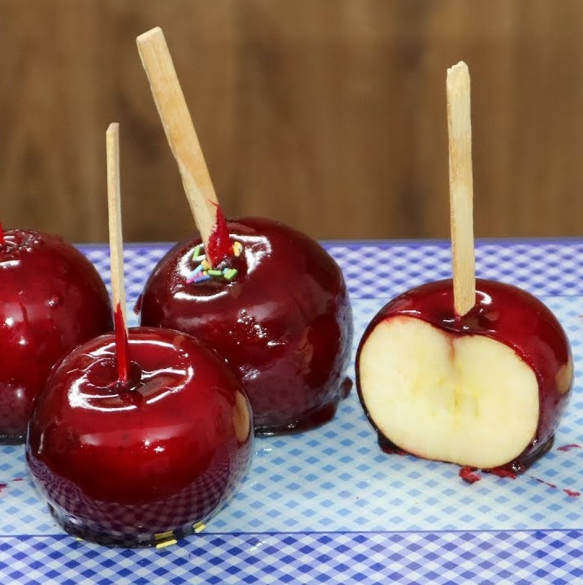

This apple of love recipe originates from Brazil and is always present
at June festivals throughout the country.
Ingredients
1 kg of sugar
500 ml of water
1 tablespoon of red dye (powder or liquid)
12 apples (small/medium)
Method of preparation
Wash and dry the apples.
Stick them with 1 or 2 toothpicks (it will help with firmness when
caramelizing).
Grease aluminum molds (can be cake pans) with very little oil.
Place all other ingredients in a pan.
In this recipe, no spoon is used (as this can add sugar to the
syrup). Mix just by stirring the pan.
Until it boils, you can use high heat, when it boils, change it to
medium and keep it for approximately 25 minutes.
Dip the tip of an ice cream stick into the syrup and drip into the
mold in seconds.
Press with your finger (it will crumple) and release onto the pan;
If it makes a solid sound, turn it off immediately and begin the
process of dipping the apples and placing them on the previously
greased pan.